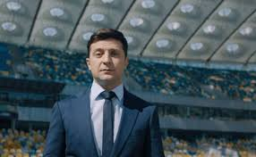

Кандидат у Президенти України Володимир Зеленський

підтримка : 30.24%
Володи́мир Олекса́ндрович Зеле́нський (25 січня 1978, Кривий Ріг) — український переважно російськомовний
громадський і політичний діяч, шоумен, актор, комік, режисер, продюсер, сценарист єврейського походження.
Керівник «Студії Квартал-95».
Продюсер телеканалу «Інтер» (2010—2012). Розпочав кар'єру політика 2018 року.
Кандидат на пост Президента України в 2019 році, пройшов до другого туру виборів